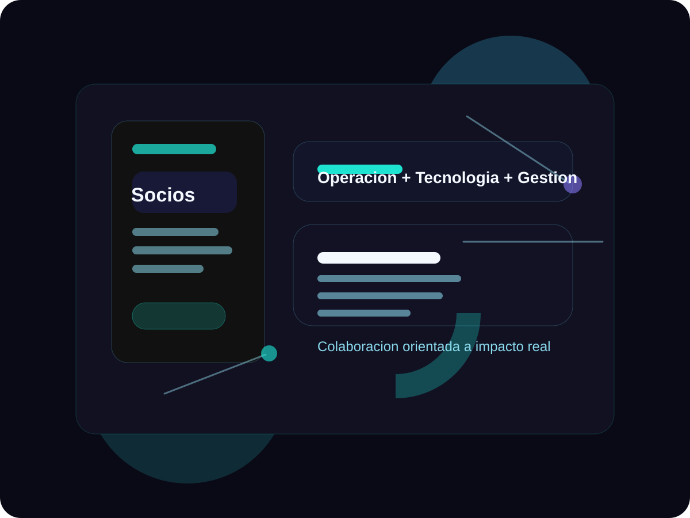

Servicios
Soluciones pensadas para captar clientes y sostener el crecimiento.
La pagina ya prioriza los servicios que mencionaste y deja abierta la puerta para agregar mas productos, verticales o casos de exito.
Servicio destacado
Venta de aplicaciones web
Presentamos soluciones listas para comercializar, con enfoque en conversion, demostracion de valor y llamada a la accion.
- Landings comerciales
- Catalogo de soluciones
- Embudo de consultas
Servicio destacado
Desarrollo web
Creamos sitios institucionales, plataformas internas y experiencias a medida con una base tecnica ordenada para crecer en equipo.
- Sitios corporativos
- Paneles internos
- Paginas orientadas a servicios
Servicio destacado
APIs e integraciones
Conectamos sistemas, automatizamos tareas y dejamos preparada la operacion para integrarse con CRM, formularios o herramientas propias.
- REST APIs
- Automatizaciones
- Integracion con terceros
Servicio destacado
Reparacion en linea y mesa de ayuda
Sumamos soporte de software remoto, seguimiento de incidentes y asistencia continua para que tus clientes sientan respaldo real.
- Mesa de ayuda
- Mantenimiento correctivo
- Soporte remoto
Sobre nosotros
Socios trabajando a la par para construir soluciones con impacto real.
Somos un grupo de socios trabajando a la par en un proyecto nuevo, con una vision compartida: construir soluciones digitales solidas, utiles y escalables. Combinamos experiencia operativa, conocimiento empresarial, criterio tecnico y capacidad de gestion para acompanar a organizaciones que buscan ordenar procesos, mejorar su presencia digital y generar relaciones estrategicas de largo plazo.
Nos define la sabiduria practica adquirida en distintas areas, la polivalencia para adaptarnos a nuevos desafios y la conviccion de que cada proyecto debe tener impacto real en la operacion, la comunicacion y el crecimiento del negocio.
- Sabiduria practica aplicada al negocio.
- Polivalencia para integrar operacion, tecnologia y gestion.
- Relaciones estrategicas orientadas al largo plazo.
- Conocimiento empresarial aplicado a soluciones digitales.
- Mirada colaborativa entre socios.

Socios
Socios

Perfil profesional
Leonel Rebolledo
Analista Sr | Compras, Datos, Procesos y Mejora Continua
Leonel Rebolledo aporta una mirada transversal del negocio, integrando experiencia en compras, operaciones, analisis de datos, gestion de riesgos y mejora continua. Su recorrido combina abastecimiento tecnico, compras indirectas y MRO, desarrollo y homologacion de proveedores, planificacion operativa, gestion logistica, soporte IT, administracion de activos tecnologicos y participacion en evolucion de sistemas ERP. Su enfoque esta orientado a generar trazabilidad, eficiencia, previsibilidad y toma de decisiones basada en informacion confiable.
Perfil profesional
Alfredo Nahuel Silva Balbin
Backend Developer | Computer Engineering Student
Alfredo Nahuel Silva Balbin aporta el perfil tecnico del equipo, con experiencia en desarrollo backend, diseno de microservicios, construccion de REST APIs e implementacion de soluciones escalables. Su recorrido incluye trabajo con Node.js, Spring Boot, SQL, Docker, Git, pipelines CI/CD, testing unitario y metodologias agiles Scrum. Tambien cuenta con experiencia en desarrollo web freelance, soporte tecnico, ReactJS, JavaScript y Python, fortaleciendo la capacidad del equipo para construir productos digitales solidos, mantenibles y orientados al rendimiento.
- Mas de 3 anos de experiencia en desarrollo backend.
- Diseno e implementacion de microservicios y REST APIs.
- Optimizacion de performance con reduccion de tiempos de carga del 30%.
- Experiencia en equipos multidisciplinarios y metodologias Scrum.
Espanol nativo
Portugues nativo
Diferenciales
Una presencia digital lista para colaborar y escalar.
Enfoque comercial
No solo programamos: ordenamos la oferta para que el sitio ayude a vender servicios y soluciones.
Escalable para colaboradores
La estructura esta separada por datos, componentes y estilos para que varias personas puedan avanzar sin romper el todo.
Listo para personalizar
Logo, celulares, imagen principal, correos y textos quedaron pensados para cambiarse desde un solo lugar.
Soporte de software
Reparacion en linea y mesa de ayuda con protagonismo propio.
No queda escondido como servicio secundario: lo mostramos como una linea fuerte para transmitir confianza, continuidad operativa y acompanamiento.
Atencion remota
Espacio pensado para ofrecer reparacion en linea, asistencia guiada y resolucion de fallas sin friccion.
Seguimiento claro
Podemos sumar luego tickets, SLAs, estados de casos y canales de contacto segun crezca la operacion.
Cobertura evolutiva
La pagina ya contempla mantenimiento, mejoras continuas y nuevas lineas de servicio sin rehacer la base visual.
Proceso
Un recorrido simple para explicar como trabajan ustedes y sus colaboradores.
Descubrimiento
Relevamos objetivos, publico, canales de venta y necesidades tecnicas del negocio.
Propuesta
Ordenamos servicios, alcance y prioridades para construir una presencia digital coherente.
Implementacion
Desarrollamos la solucion, conectamos formularios o APIs y ajustamos la experiencia responsive.
Soporte continuo
Mantenemos, ampliamos y acompanamos el crecimiento con nuevos modulos y mejoras operativas.
Preguntas frecuentes
La base ya contempla las consultas tipicas de una empresa de tecnologia.
Se puede reemplazar luego el logo y la imagen principal?
Si. Ambos recursos quedaron como placeholders para que luego se cambien por la identidad visual final de la empresa.
Los numeros de celular se pueden actualizar facil?
Si. Los telefonos estan centralizados en un archivo de contenido para cambiarlos una sola vez y reflejarlos en toda la pagina.
Esta base sirve para seguir agregando paginas?
Si. La estructura permite sumar nuevas secciones, paginas de servicios, portfolio, blog o area de clientes sin rehacer el proyecto.
Se puede integrar WhatsApp, formularios o un CRM?
Si. La seccion de contacto y la capa de scripts quedaron preparadas para conectar botones, formularios y futuras integraciones.